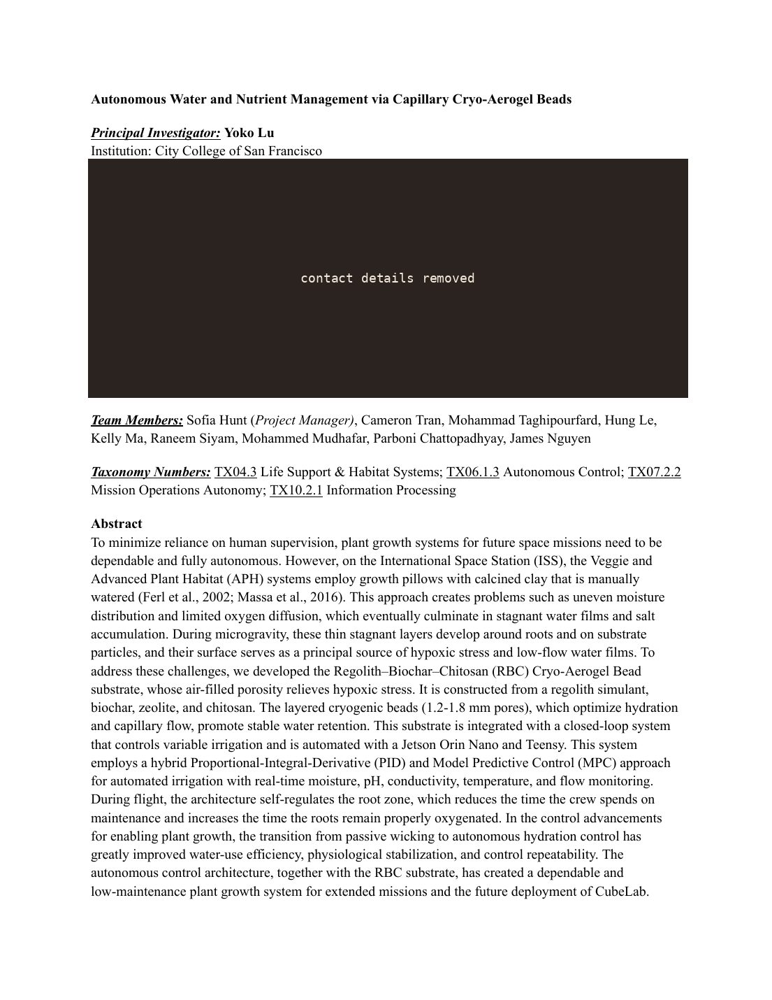
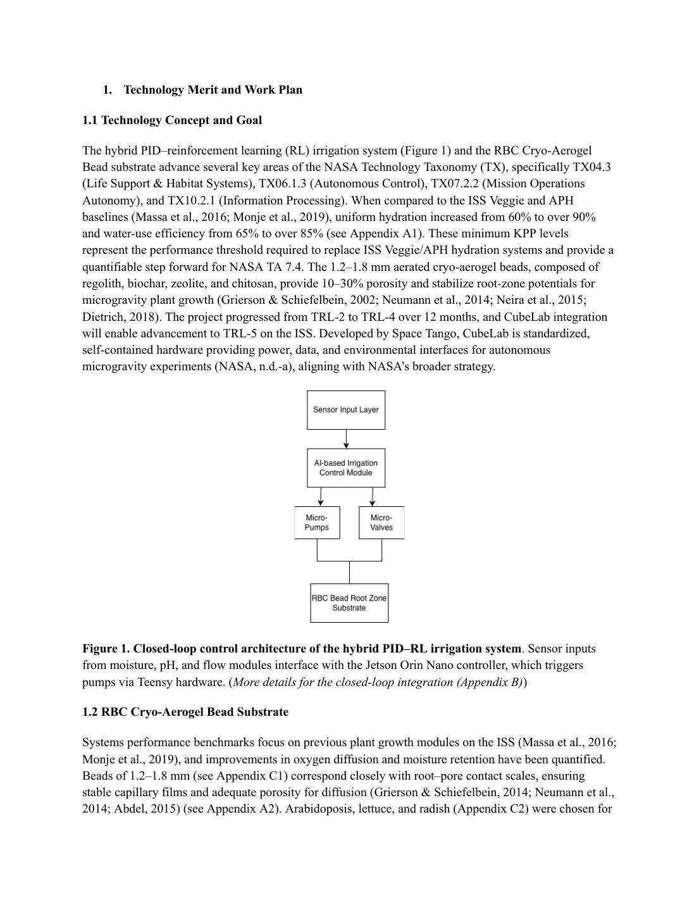
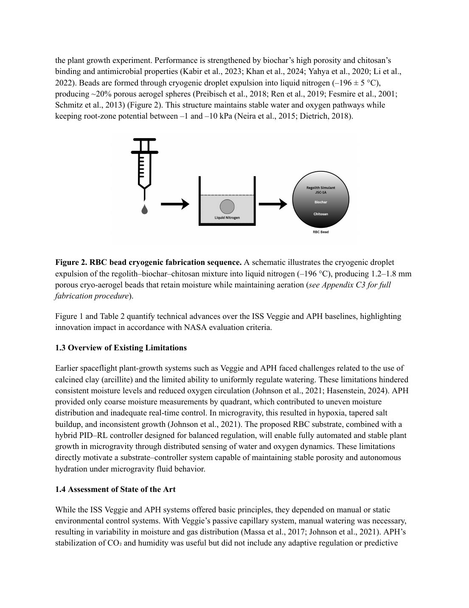
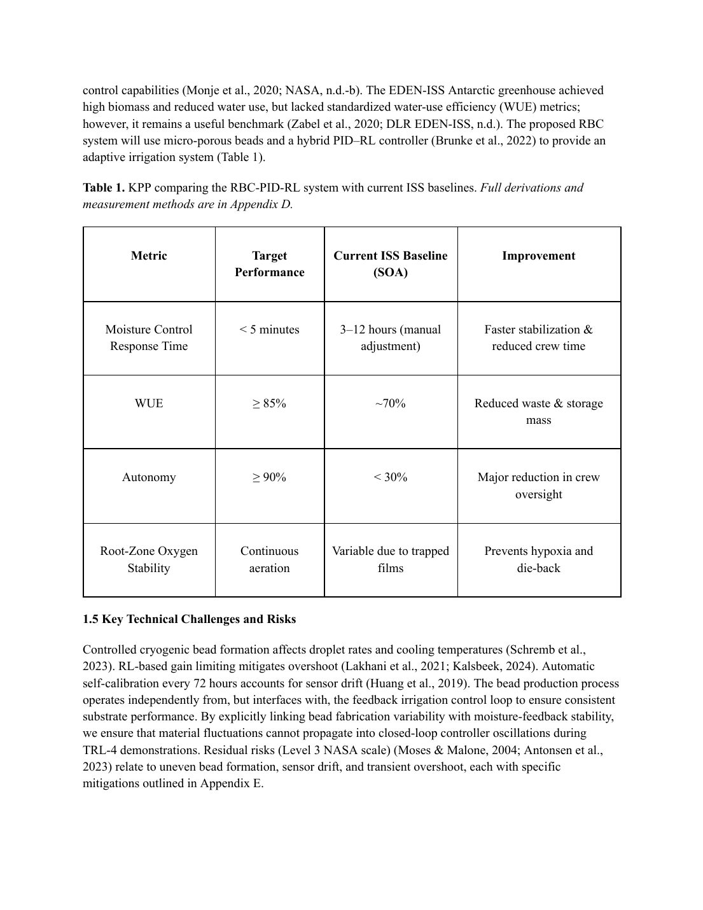
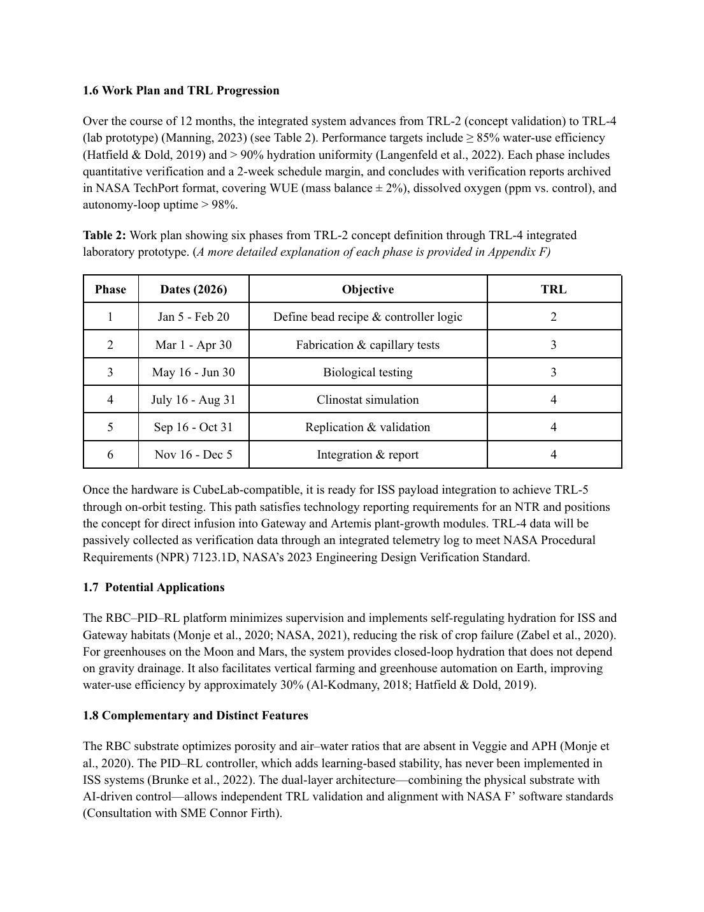
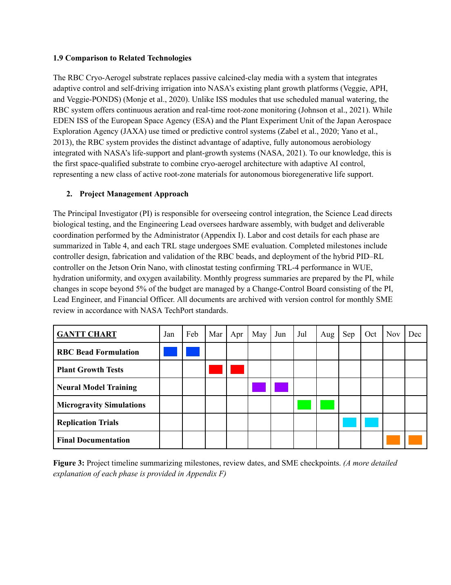
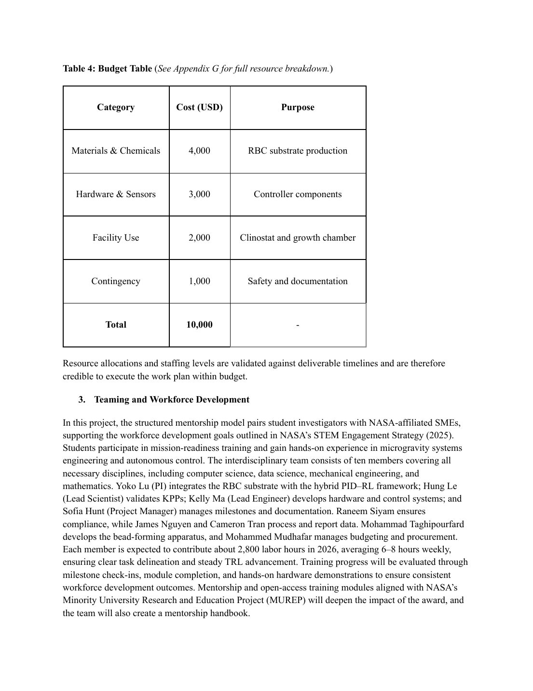
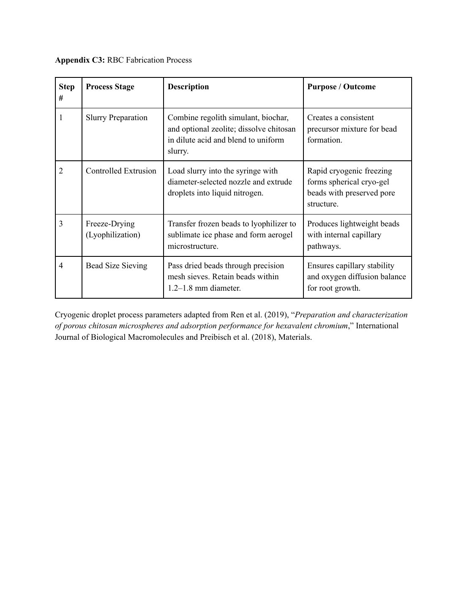

The problem
The ISS grows food in systems called Veggie and the Advanced Plant Habitat. Both rely on clay “pillows” that crew members water by hand. In microgravity, water doesn’t drain the way it does on Earth. It clings in thin films around roots, so some roots drown, others dry out, salt builds up and the crew loses hours to upkeep.
What we proposed
Tiny porous beads, 1.2–1.8 mm across, made by dropping a mix of regolith simulant, biochar, zeolite and chitosan into liquid nitrogen. The air pockets keep roots breathing. A controller running on a Jetson Orin Nano reads moisture, pH, conductivity and flow sensors and adjusts watering on its own, using a hybrid of classic PID control and reinforcement learning.

My role
I owned visualization and data analytics for the team, about 7 hours a week, and made many of the proposal’s graphs. My job was to take dense technical targets and comparisons with today’s ISS systems and turn them into charts reviewers could read at a glance. One of mine was Appendix C3, the fabrication process table, which breaks a lab procedure into four steps and pairs each one with why it matters.
Targets
| Measure | ISS today | Our target |
|---|---|---|
| Moisture response time | 3–12 hours (manual) | Under 5 minutes |
| Water-use efficiency | ~70% | 85%+ |
| Autonomy | Under 30% | 90%+ |
| Readiness (TRL) | TRL 2 | TRL 4 in 12 months, $10K |